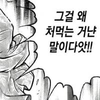

[강혐] 생메뚜기
댓글
아 씹ㅋㅋㅋㅋ 씹고 있는거 보여주지 말라고
해지마~~해지마~~
기생충 많을 거 같은데
개드립에 버려야지
먹고있는거 믿을게ㅋㅋㅋ 안보여줘도돼
속이 안좋아졌다

으악!!!!!ㅋㅋㅋㅋㅋ
무료 충근 멤버쉽
상수형..
베어그릴스,에드 스태포드 먹방
자주 봐서 먹는건 덤덤한데, 혓바닥 내미는건 좆더럽네..
첨에머리따고나온 검은내장들은 버려도되지않앗을까..
씨발 씹다가 내미는건ㅋㅋㅋ
이충근에 비하면 암것도 아니구만 ㅋㅋ
아우 씨발

어렸을때 메뚜기 어떻게 먹었지...
너?
기생충..
연가시는 보너스
휴 그래도 타란튤라 생으로 먹는 짤보단 낫네 휴
어디나라 말이야?
멸치똥은 떼고먹지
메뚜기월드에 오신걸 환영합니다
하
머리 씹힐 때 순간 다리 버둥거리는 거 ㄷㄷ
저거 새우맛난다고 했나? 그럼 생새우 먹는 느낌인건가?
똥 안빼고 먹으면 쓰고 비린데 먹을 줄 모르네
ai라해주셈..
투입~